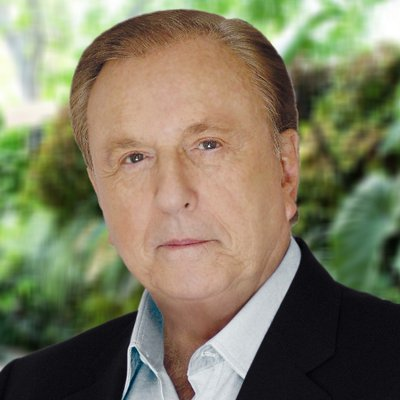

OU
OU


Nome
Perfil
Highscore do quiz:
Sair
Marina Silva
Marina Osmarina da Silva Vaz de Lima, nascida Maria Osmarina da Silva é uma historiadora, professora, psicopedagoga, ambientalista e política brasileira filiada à Rede Sustentabilidade.
Jair Bolsonaro

Jair Messias Bolsonaro é um militar da reserva e político brasileiro, filiado ao Partido Social Liberal. É deputado federal desde 1991, atualmente em seu sétimo mandato, eleito pelo Partido Progressista.
Fernando Haddad
Fernando Haddad é um acadêmico, advogado e político brasileiro, filiado ao Partido dos Trabalhadores. Foi ministro da Educação de 2005 a 2012, nos governos Lula e Dilma Rousseff, e prefeito da cidade de São Paulo de 2013 a 2016.
Ciro Gomes
Ciro Ferreira Gomes é um político, advogado e professor universitário brasileiro filiado ao Partido Democrático Trabalhista, do qual é vice-presidente e, neste ano, é candito à presidência.
Geraldo Alckmin
Geraldo José Rodrigues Alckmin Filho é um médico, e político brasileiro, filiado ao Partido da Social Democracia Brasileira. Foi Governador do Estado de São Paulo, quando renunciou para disputar as eleições de outubro de 2018.
Alvaro Dias
Alvaro Fernandes Dias é um historiador, professor e político brasileiro. Filiado ao Podemos, exerce atualmente o cargo de Senador da República Federativa do Brasil, representando o Estado do Paraná.
Henrique Meirelles

Henrique de Campos Meirelles é um executivo da área financeira, político e ex-Ministro da Fazenda do Brasil. Atualmente é filiado ao Partido Movimento Democrático Brasileiro, concorrendo ao cargo de presidente do Brasil em 2018.
João Amoêdo
João Dionisio Filgueira Barreto Amoêdo, é um político, banqueiro, engenheiro e administrador de empresas brasileiras. É um dos fundadores do Partido Novo e, atualmente, candidato à Presidência da República em 2018.

Guilherme Boulos
Guilherme Castro Boulos é um ativista político e escritor brasileiro, filiado ao Partido Socialismo e Liberdade e é membro da Coordenação Nacional do Movimento dos Trabalhadores Sem Teto.
José Maria Eymael
José Maria Eymael é um advogado, empresário, fundador e atual presidente do Partido Democracia Cristã. Foi candidato por quatro vezes, mas devido ao pouco tempo de sua campanha, ele recebeu poucos votos.
Cabo Daciolo
Benevenuto Daciolo Fonseca dos Santos é um bombeiro militar e político brasileiro filiado ao partido Patriota. Em 2014, foi eleito deputado federal pelo Rio de Janeiro e, atualmente, está filiado ao Patriota.
João Goulart Filho

João Vicente Fontella Goulart, também chamado de João Goulart Filho, é um filósofo e político brasileiro. Neste ano é candidato à presidência do Brasil, sendo afiliado ao Partido Pátria Livre.

Vera Lucia
Vera Lúcia Pereira da Silva Salgado é uma política brasileira, filiada ao Partido Socialista dos Trabalhadores Unificado. É candidata à presidência da República na eleição presidencial de 2018. Foi uma das fundadoras do PSTU e é a presidente do partido em Sergipe.